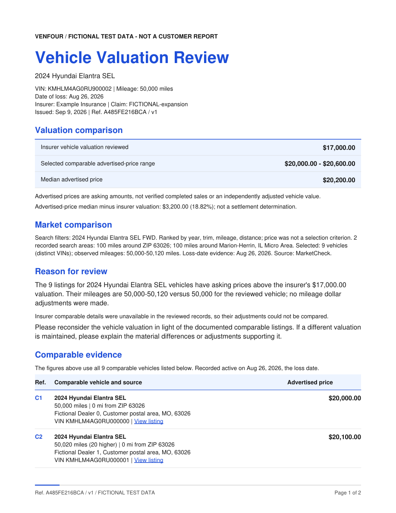
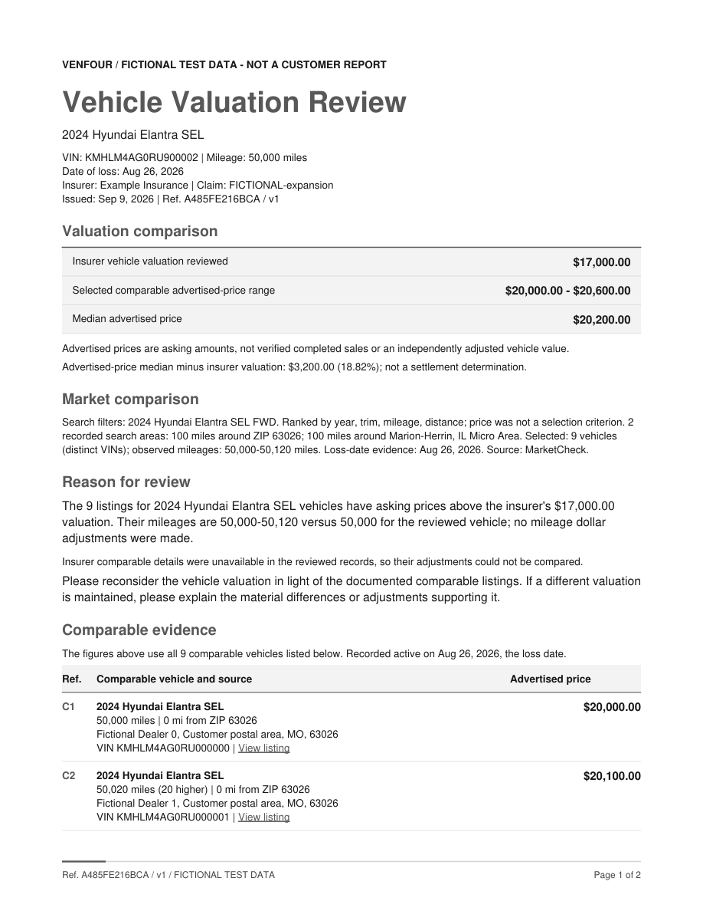
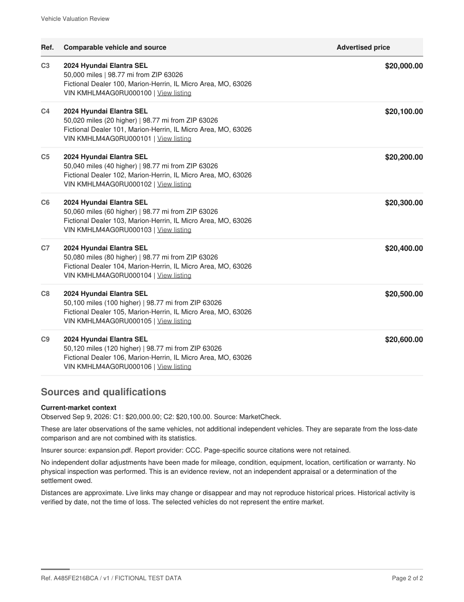
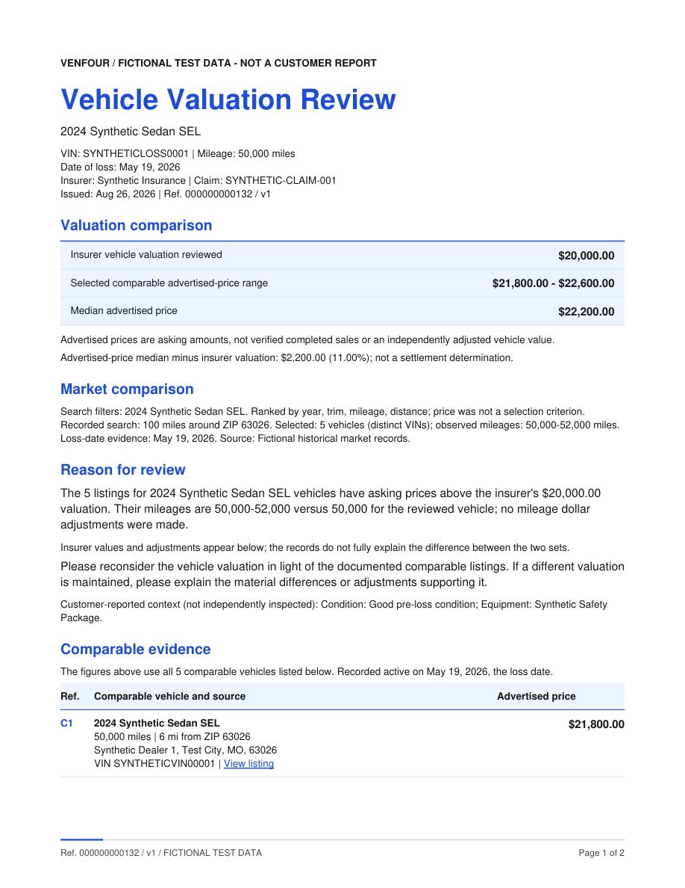
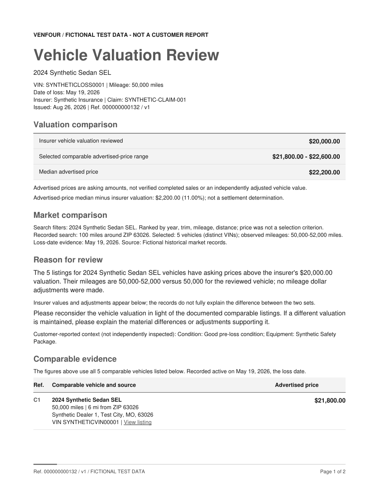
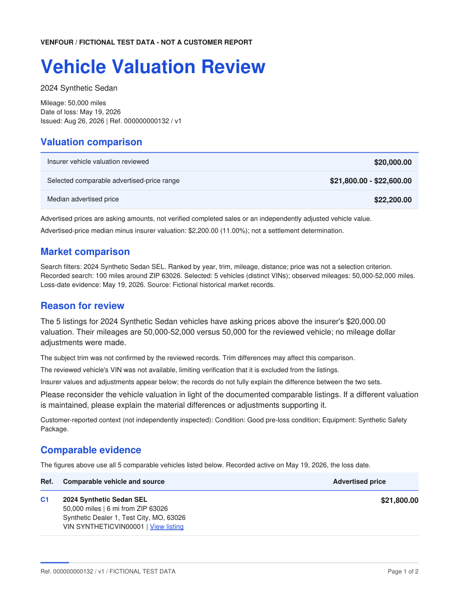
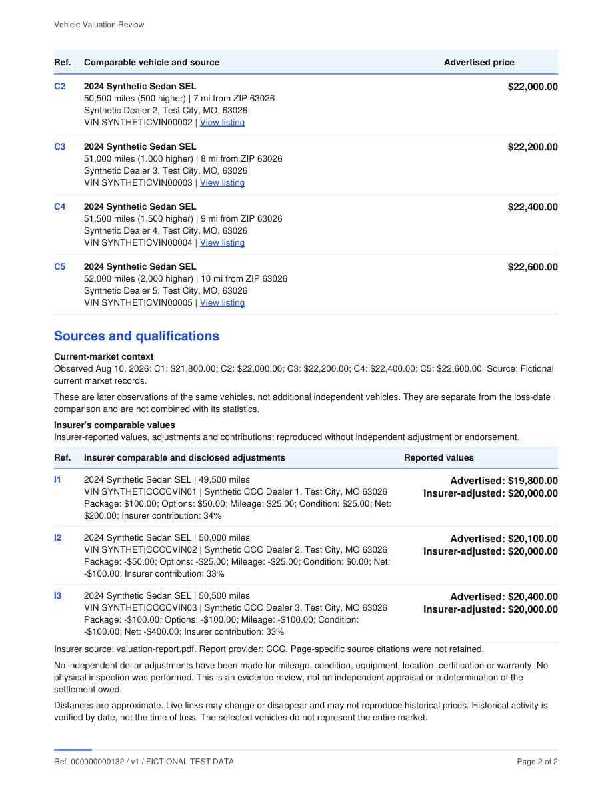
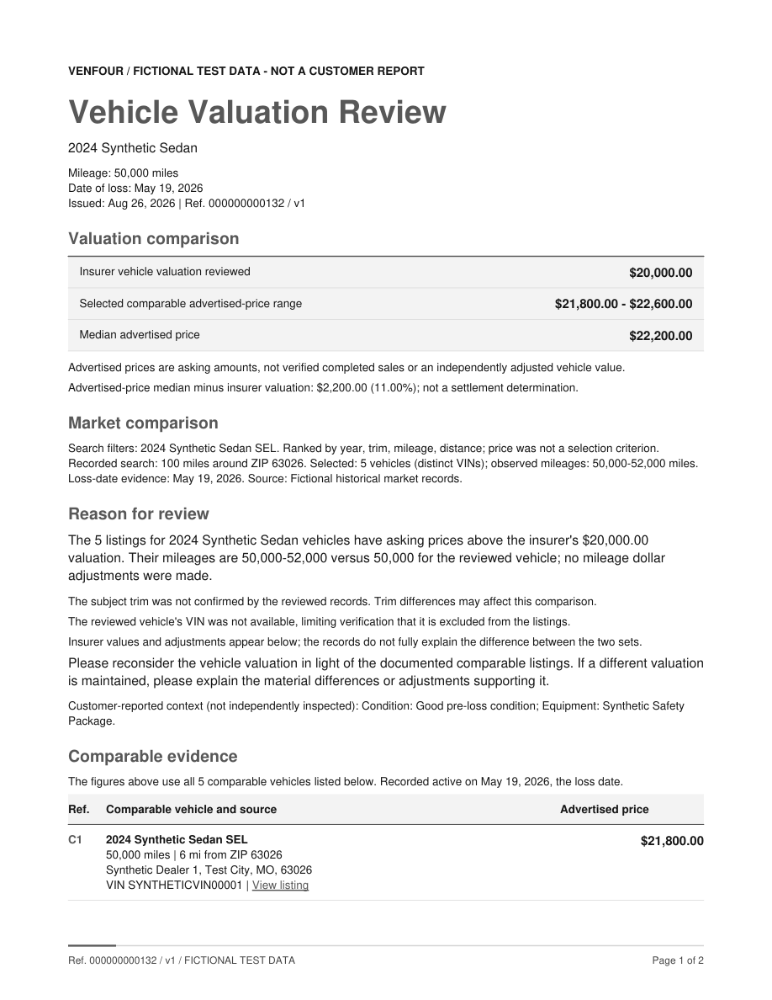
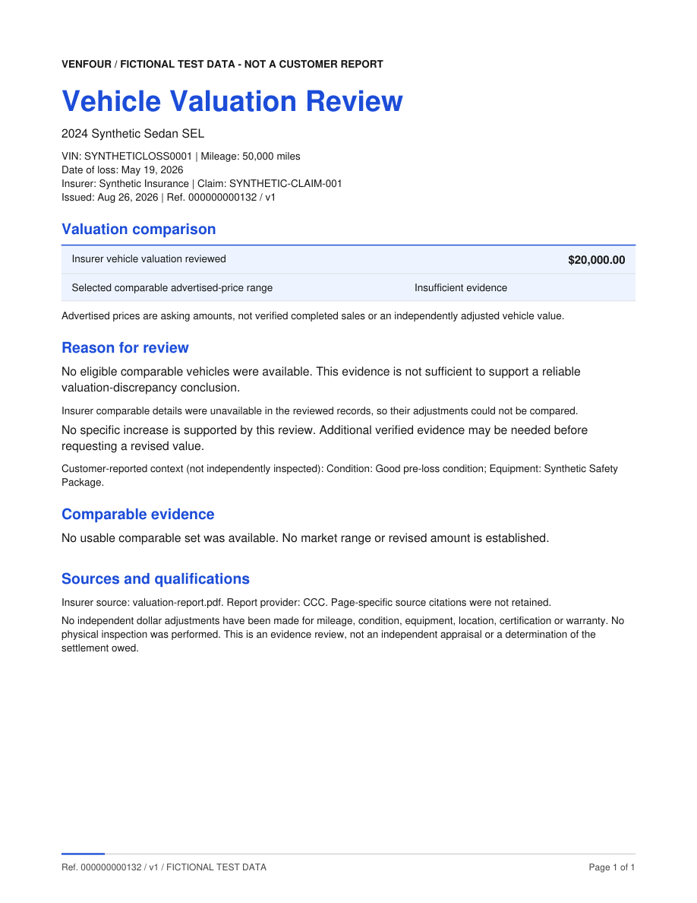
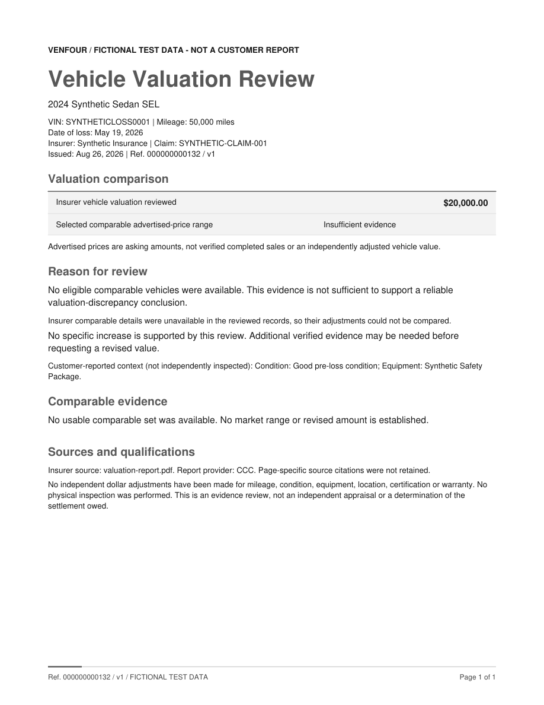

Vehicle Valuation Review
Fictional local samples. Click a title for its PDF, or a page for its full-resolution image. Grayscale print previews are included. These samples do not establish production release qualification.
Evidence, validation and required qualification
Original frozen fictional sample: nine vehicles and two 100-mile search areas.

Color: page 1 of 2Color: page 2 of 2Grayscale print previews

Grayscale: page 1 of 2
Grayscale: page 2 of 2Offline analysis with five market vehicles and three insurer comparables.

Color: page 1 of 2 Color: page 2 of 2
Color: page 2 of 2Grayscale print previews

Grayscale: page 1 of 2 Grayscale: page 2 of 2
Grayscale: page 2 of 2Presentation stress fixture; missing optional facts and identity limitations are disclosed.

Color: page 1 of 2
Color: page 2 of 2Grayscale print previews

Grayscale: page 1 of 2Grayscale: page 2 of 2Presentation stress fixture without eligible comparables; no increase requested.

Color: page 1 of 1Grayscale print previews

Grayscale: page 1 of 1